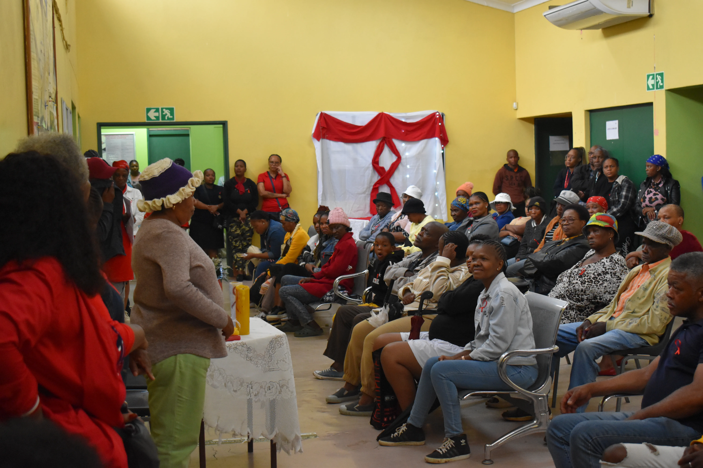

Two places, working differently, for the same reason.
We're active in two areas of the Western Cape: Atlantis and Kewtown. Each site runs on a model built around what that community can actually sustain.
Atlantis — the Braitex factory
Our partnership with the Braitex factory began in 2024, and runs on a co-pay model: both the factory and its employees contribute to treatment costs. We visit two to three times a month, covering both day and night shifts, since the factory runs around the clock.

Kewtown — our founding clinic
This is where it all began, in 2019, from the home of a community member. Today we run a pro-bono clinic here, treating between 18 and 25 people a month from Kewtown, Bridgetown, Manenberg, Silvertown, and Mitchells Plain.
To treat more people, we've moved into the Al Waagah Institute for the Deaf — giving us the space to grow the clinic without losing the neighbourhood feel that made it work in the first place.

Stories from our clinics
The people we treat tell this story better than we can. Here's space for a few of theirs.
Ask one Braitex employee if they'd share 2–3 sentences on what changed for them physically since starting treatment — and whether they're comfortable being named or would prefer to stay anonymous.
The homepage already has one strong Kewtown testimonial. A second or third, from a different neighbourhood on this list, would show the reach beyond Kewtown itself.
Consider one story from a practitioner-in-training's side: what they've learned, and what it's meant to treat people in their own neighbourhood.
Help us reach more neighbourhoods
A co-pay clinic runs at a fraction of full cost. A pro-bono one runs on none at all — it runs on people like you.
Donate to a clinic